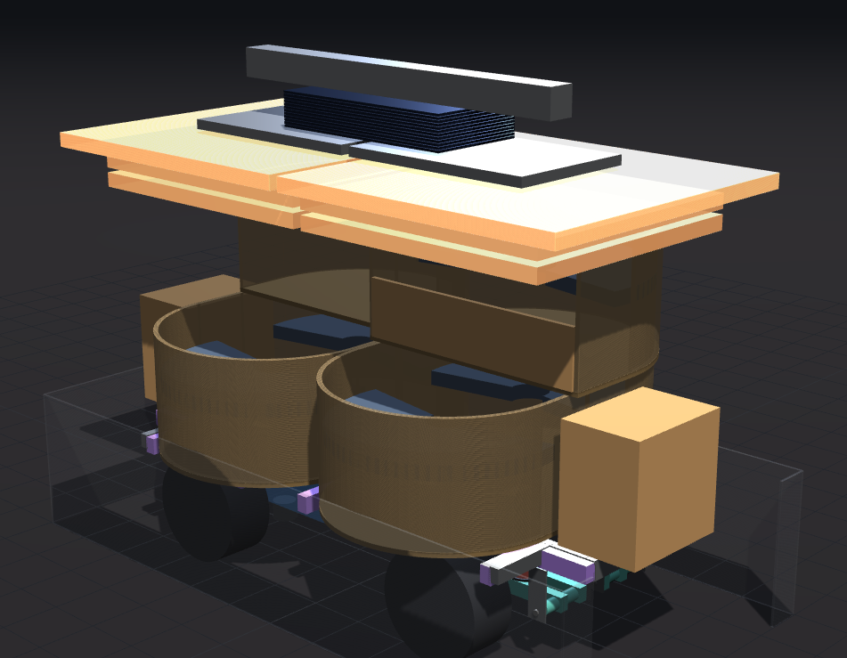

Plan of record · construction · rev 13 September 2026
Construction
The order things get built and proven, what is made in the shop versus sent out, and how the car travels as modules and goes back together at camp. The rule throughout: prove one of everything on a jig before cutting the rest.
Build order
- Measure the current car this year. A coulomb counter on its pack and a phone GPS track for a night give Wh per mile all-in; a crane scale on a tow rope at walking pace gives rolling resistance on the playa. These two numbers size the motors and the pack and nobody has them.
- Vendor data before any machining. The QS205 car-motor drawing and wheel-end load rating for the exact variant; continuous torque and temperature at 75–85 rpm; the EVE cell revision's current rating; a rack with ~5″ of travel; brake rotors and calipers matched to the hub.
- One front corner and a rack fixture. Build a single front corner module — arm, knuckle on its inclined kingpin, torque block, D2500, damper — on a fixture with the rack, load it to the corner reactions and cycle it through travel and lock. This is where the sampled clearances in the model (tire vs rail, sleeves, arm legs, spring) get checked for real, before the chassis is frozen.
- The low-speed motor test. Run the corner at 75–85 rpm under load long enough to see the winding temperature settle.
- One pod on a jig. Bolt two receiver tubes to a straight bar at the real 28″ spacing, weld the arms with both inserted so they end up parallel, build the pod on it from the cut list, weigh it, and load-test the joint at the ×3 design moment (~37,500 in·lb). Then cut the other five.
- The frame. Ladder, cross members, receiver sleeves through the rails into the cross members, roof-post sockets, wheel wells in the deck. Stays in one piece: a split frame costs weight and stiffness. Line-ream the pivot bores after welding.
- Corners, steering, brakes, sled. Four corners plus the spare; rack, column and quick-disconnect; tandem master, pedal, calipers and the parking lever; the sled with its cart, contactors, precharge and plugs; controllers and the air system, calibrated at a known ride height.
- Pods, stairs, roof, ottomans. Five more passenger pods and the driver pod (sit in the cardboard mockup first); two stair modules with handrails; the roof halves; the aisle benches. Wire each module to one connector.
- Assemble, load, drive. Full assembly at home; the loading procedure written down for the DMV; a loaded drive with the corner-load and roll numbers checked against the model.
Shop, methods and materials
- Steel for everything that carries people. MIG-welded mild steel tube: cheapest, tolerant of abuse; watch fatigue at ungusseted welds and cap open tube ends. Galvanized (EMT) is out because it cannot be welded safely at home. decided
- Aluminium only where it is bolted. The roof. It saves about half the weight but needs TIG and fatigues worse at welds. The aluminium pod frame in the model would use internal sleeves at every joint so only fastener heads show — kept as an option. decided
- Plywood as a stressed skin, not cladding. Baltic birch, through-bolted or T-nutted (screws into end grain shake loose), every edge sealed. decided
- Laser-cut parts. Every ply panel on a pod except the floor and seat pan is a laser part; the 19 × 11″ bed sets the module size (two per bay). Modules are bench-tested and identical, so a bad one gets swapped, not repaired on the playa. decided
- Playa materials. Closed-cell or HR foam (never open-cell), solution-dyed acrylic or vinyl mesh fabric, polycarbonate over acrylic wherever there is a bolt hole and vibration, sealed bearings and connectors. decided
- Buy / fabricate / machine. Buy the motors, controllers, springs, dampers, rack, brakes, cells and protection; weld and cut the frame, arms, towers, hangers, brackets, cradle and enclosure; send the concentrated set of precision parts — kingpin seats, thrust faces, torque blocks, pivot bores, rotor adapters — to a machine shop. No need to own a mill or lathe, but someone has to own those interfaces and tolerances. direction
- Pod build order (from the notes): jig; floor frame flat on the table from the cut list's post coordinates with the arms underneath, slid into the chassis before anything goes up; posts plumb off the floor ring, top ring, back rail, seat chord, ribs, legs, tack, sit on it, weld out, paint; ply on T-nuts, LED rows, wiring down one post to a connector at the arm; diffuser last, then foam, then fabric. decided
Transport and assembly at camp

The car travels as modules, each light enough to roll on and off the trailer by hand or winch, and is assembled at camp. The battery is its own rolling unit that goes under the car and bolts up.
| Module | Weight | Moves how | Notes |
|---|---|---|---|
| Chassis (frame, deck, four corners, steering, brakes, controllers) | ~1,050 lb; ~1,550 with the sled | Drives itself up the ramp, or winched | Fits 54 × 120″; 53″ over the tire faces through the 57″ ramp opening. With the sled fitted it is ~86 % of the ramp rating; rolling the sled off first makes the ramp comfortable. |
| Battery sled | ~475 lb | Rolls on its own cart; rides in the RV | Car kneels onto it (or the cart lifts); four bolts, two SB350 plugs, one comms plug. Charges at home off the car. |
| Pods (five passenger, one driver) | ~128 lb; ~200 driver | Dollies, two people; arms pulled and stowed | U pods stack 4 per layer, two layers on the trailer; a cradle at receiver height removes the lift. One connector per pod. |
| Stairs and ottomans | ~35 and ~25 lb each | By hand; in the RV if the tow weight needs it | Stairs slide onto their receiver stubs at the walkway. |
| Roof | ~30 lb per leaf piece with its panels | Six pieces flat on top of the pods | Same demount logic as the current hoops; panels (~54 lb) can ride in the RV. |
- Trailer + car ≈ 5,030 lb against the 5,000 lb tow target before cargo, so the sled, ottomans, stairs and panels ride in the RV (≈ 4,700 lb on the trailer with ~250 lb of cargo). Tongue weight 500–750 lb: check the hitch and place the car to suit.
- The ramp is ~20° with the deck 24″ up; a ~$100 12 V winch on the tongue makes the cart and dollies a one-person job. Cart and dollies want 8–10″ wheels, and a couple of sheets of plywood to roll on at camp.
- Assembly at camp: sled under, kneel, bolt up, plug in; pods slide in and pin (two pins each); stairs onto their stubs; roof halves onto the eight posts; one connector per module. Write the procedure down — the DMV reviews loading and unloading.
Models and drawings
- model/frame-3d.html — the Trailer view stacks pods, stairs and roof on the bare car inside the trailer outline with a fit readout; the transport readout gives ramp, trailer and tow margins with a cargo slider. simple · advanced
- model/loveseat-build.html — "Cut list" prints every tube length, post coordinate and panel size for one pod; "Copy OBJ" exports the mesh for Blender or Fusion. advanced
- model/drivetrain-3d.html — parts coloured buy / fabricate / machine, with a note on each; OBJ + MTL export in metres for CAD. simple · advanced
- model/podcar_model.py — the 1:12 cardboard model sheets for the Glowforge (score → inner cuts → outlines; 1/16″ cardboard, toothpick axles and pins).
Open items
- A schedule. Nothing here has a date yet; the long poles are the motor lead time (10–12 weeks direct) and the machining.
- The jig for the receiver tubes and the fixture for the front corner and rack are the first things to build and are not designed.
- Where the machining goes, and who checks the pivot and kingpin tolerances.
- The loading/unloading procedure for the DMV, and the stair handrail.
How we got here
The transport and assembly plan is section 7 of the notebook, revised after the drivetrain review corrected the weights and the tow target. The pod build order, jig and materials reasoning are in loveseat.md; the buy / fabricate / machine breakdown and the "prototype one corner first" recommendation come from the drivetrain review and its response.